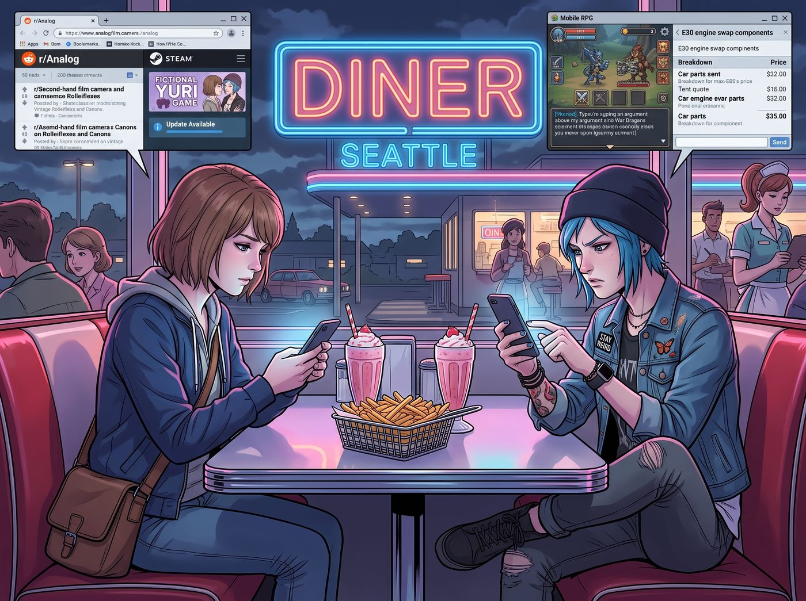
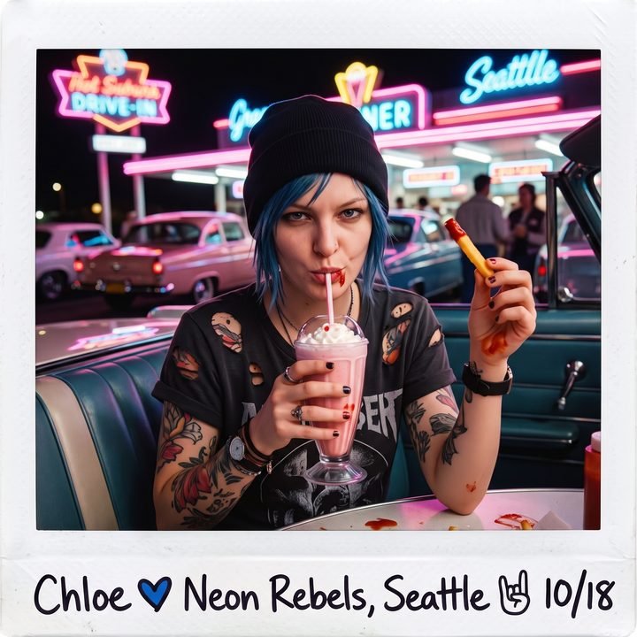

絕對物理隔離時間


時間來到二零一九年，智慧型手機的統治力早就無孔不入。在這個低頭族遍地走的時代，哪怕是剛經歷過生死逃亡、或者躲在反應爐旁邊的廢土特工，也逃不過現代碳基生物的終極肌肉記憶——只要一坐下來，手就會不自覺地摸向口袋裡的那塊發光磚塊。
這天，Chloe 和 Max 終於迎來了難得的休假。兩人開著那輛重裝皮卡，離開了二號車廂，來到西雅圖郊區一家充滿復古霓虹燈的汽車餐廳約會。
點完兩杯草莓奶昔和一份超大號薯條後，不可避免的現代場景發生了。
一、賽博時代的沉默約會
Max 坐在紅色的卡座沙發上，低著頭，手指在螢幕上滑動。她正在專心致志地逛著二手底片相機的論壇，順便看看之前那個剛解鎖的百合遊戲有沒有更新。
而坐在對面的 Chloe，則翹著二郎腿，眉頭緊鎖地盯著手機螢幕，大拇指狂戳，顯然正在某個手遊裡跟人激情對罵，或者在看車輛改裝零件的報價。
一分鐘過去了。兩分鐘過去了。兩杯草莓奶昔端上了桌，但這對經歷過時空撕裂的靈魂伴侶，依然像兩個毫無交集的現代陌生人一樣，各自沉浸在自己的數位資訊流裡。
如果換作普通情侶，這種各玩各的或許會持續到約會結束。但她是 Chloe Price。
街頭霸王對任何事物的耐心都極低，尤其是當她發現自己對 Max 的吸引力居然暫時輸給了一塊螢幕時，她骨子裡那股龐克的佔有慾瞬間就炸了。
二、距離半公尺的數位挑釁
Chloe 沒有直接開口抱怨，而是嘴角勾起一抹壞笑，打開了通訊軟體，直接給坐在距離她不到半公尺的 Max 發了條訊息。
「叮咚。」Max 的手機震了一下。螢幕頂端彈出 Chloe 的訊息：「嘿，坐在對面的那個短髮文青妹。」
Max 愣了一下，從相機論壇裡抬起頭，有些茫然地看向對面的 Chloe。Chloe 卻故意不看她，依然低著頭假裝在認真滑手機，只是嘴角的笑意越來越明顯。
Max 忍不住笑了，低下頭回覆：「幹嘛？妳的網路是卡到只能發文字了嗎，Price 小姐？」
「叮咚。」Chloe 秒回：「我只是在評估，我需要花多少錢才能把妳從那個無聊的螢幕裡買出來。或者，我可以直接駭進妳的手機，把妳的瀏覽器首頁改成我的自拍照。」
Max 咬著嘴唇，手指飛快地敲擊：「Lily 說過，未經授權駭入伴侶設備屬於嚴重的信任違規。小心我讓她鎖妳的遊戲帳號。」
「叮咚。」這一次，Chloe 的訊息充滿了極度危險的實體威脅：「去他的 Lily，去他的合規。Maxine Caulfield，給妳三秒鐘把那塊破玻璃放下。否則我現在就越過這張桌子，當著那個端盤子的服務生的面，狠狠地吻妳，直到妳窒息為止。3... 2...」
三、拒絕低頭，回歸類比
Max 嚇得臉一紅，幾乎是條件反射般地，瞬間將手機螢幕朝下，重重地扣在了桌面上。
Chloe 滿意地抬起頭，將自己的手機也隨手扔到一邊。她伸出長臂，一把將 Max 的手機也撥到了自己這邊，然後將兩支手機一起塞進了自己皮夾克最深處的口袋裡，並拉上了拉鍊。
「沒收。」Chloe 雙臂交疊撐在桌面上，身體前傾，那雙藍色的眼睛帶著灼熱的溫度，死死地盯著 Max 的臉，「今天晚上是絕對物理隔離時間。沒有Wi-Fi，沒有藍牙，沒有該死的社交網路。」
「霸道。」Max 小聲嘟囔了一句，但臉上的紅暈和嘴角的笑意卻怎麼也藏不住。
沒有了手機的干擾，周遭的世界彷彿瞬間鮮活了起來。點唱機裡播放著七十年代的老搖滾；窗外的雨滴打在霓虹燈招牌上，折射出紅藍交織的光暈；而眼前這個藍髮女孩咬著薯條、對著她壞笑的樣子，比任何一塊螢幕都要生動。
Max 從帆布包裡摸出了那台老舊的寶麗來相機。
「既然禁止使用數位設備，」Max 舉起相機，對準了正在吸草莓奶昔的 Chloe，「那我只能用這台不用連網的老古董來記錄約會了。」
「這才對嘛。」Chloe 配合地舉起一根沾著番茄醬的薯條，擺出了一個極度囂張的龐克姿勢，「盡情拍吧，攝影師。記住，妳眼前的這個模特兒，可比妳手機裡那些虛擬的二次元紙片人辣多了。」
在這個被數位洪流淹沒的二零一九年，兩個女孩坐在復古的汽車餐廳裡，用紙巾畫著塗鴉，用底片記錄著光影，互相搶著對方盤子裡的食物。
對於她們來說，手機只是用來對付世界和資本的武器；但在彼此面前，她們永遠會選擇抬起頭，去注視對方那雙比任何演算法都要深邃的眼睛。